Convolutional Transformers for Inertial Navigation
For my junior independent work at Princeton, I implemented neural network architectures that improve on existing state-of-the-art architectures on the task of inertial navigation. This task uses measurements from inertial measurement units (IMUs), which contain an accelerometer and a gyroscope, to predict an objects position. IMUs are cheap, ubiquitous, energy-efficient, and used in a wide variety of applications.
My models use a transformer encoder and incorporate convolutional layers to extract both global and local data relationships, and achieve better results than the previous best method.
The project paper is available here, and the poster can be viewed here.
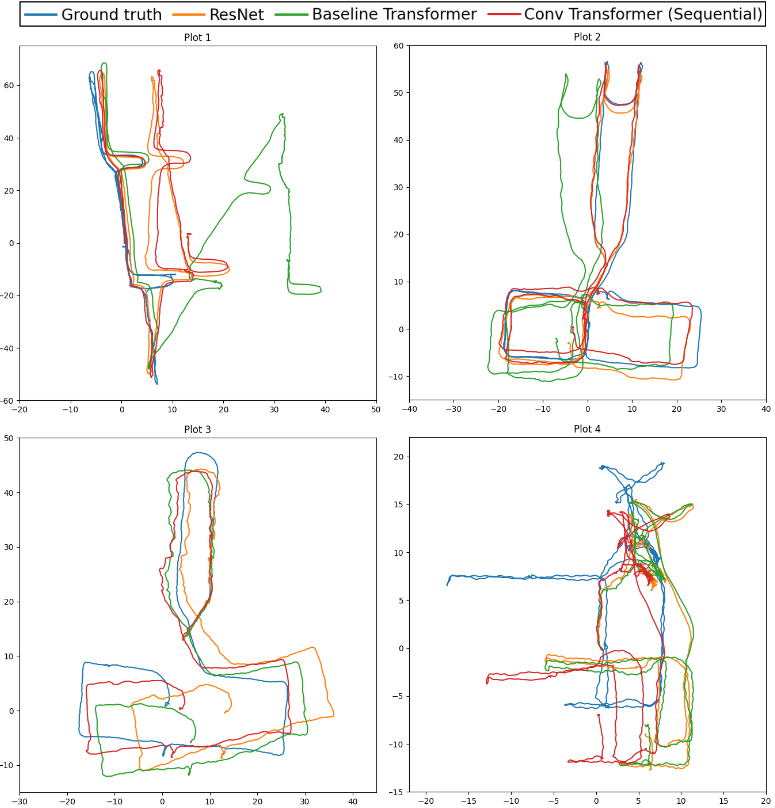
OSCAR: Occluding Spatials, Category, And Region under discussion
For the final project for COS484 (Natural Language Processing) at Princeton, we reproduced a question-answering model and the ablations from this paper. We additionally performed several of our own ablations, and tested using different models for generating question embeddings.
The code for this project is publicly available here.
The project paper is available here, and the poster can be viewed here.
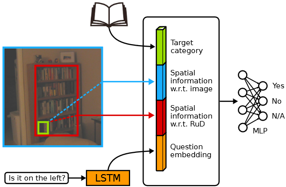
Generative Models in Hyperbolic Space
During summer 2021, I joined the Laboratory for Intelligent Probabilistic Systems under Dr. Ryan Adams to develop a system for visualizing, exploring, and optimizing generative models in 3D hyperbolic space. I designed a model and projection of 3D hyperbolic space using OpenGL, and connected the model with a PGAN for generating correlated images based on geodesic distance. Currently I'm investigating applications of human-in-the-loop latent space optimization in this system.
Unlike normal Euclidean space, hyperbolic space expands exponentially due to having negative curvature, which makes it much more interesting to explore and far less limited than Euclidean space. However, this also makes it impossible to properly represent every coordinate in the hyperbolic world using floating-point numbers. My model of hyperbolic space uses a square tiling system so that it only needs to deal with coordinates local to the user.
The public GitHub repo for this project is available here.
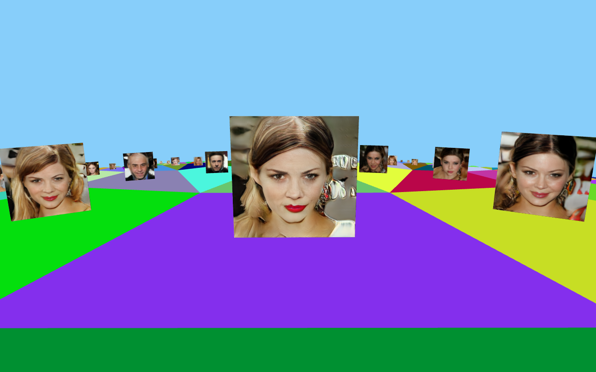
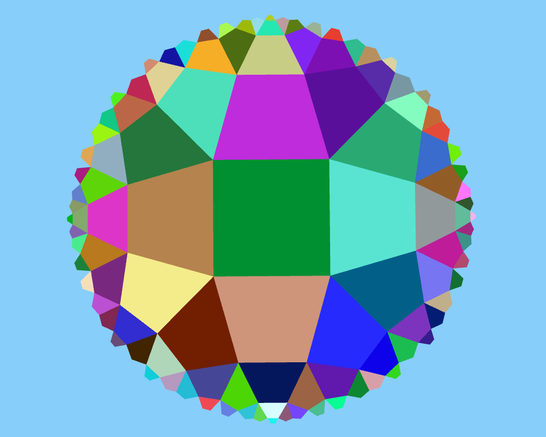
Pedestrian Detection and Interpretability
For the final project for COS429 (Computer Vision) at Princeton, we investigated whether CNNs trained for object detections are reliant on visual cues when detecting pedestrians. We trained a Faster R-CNN on the Caltech Pedestrian Dataset, evaluated the model on different categories of pedestrian images, and improved the model by up-weighting images in poor-performing categories during training.
The code for this project is publicly available here.
The project paper is available here, and the poster can be viewed here.
{kind=link}
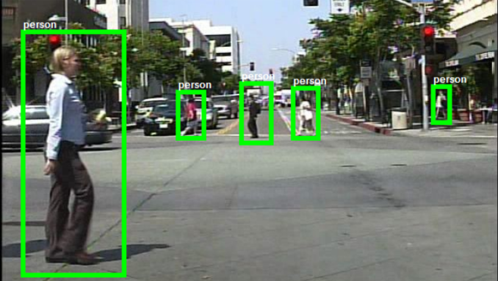
Optical Flow
During summer 2020, I joined the Princeton Vision & Learning Lab to work on a visual learning project on optical flow. I helped develop and optimize a system for collecting human-annotated images.
These annotations are used to predict the ground truth optical flow for various scenes and videos.
Ray Tracing
During a summer internship at Oregon State University I created a simple ray tracer using C++. I implemented and tested methods for improving image rendering speed and making rendered images more realistic.
The top image is an output from an early version of the ray tracer that used simple methods such as antialiasing and reflection.
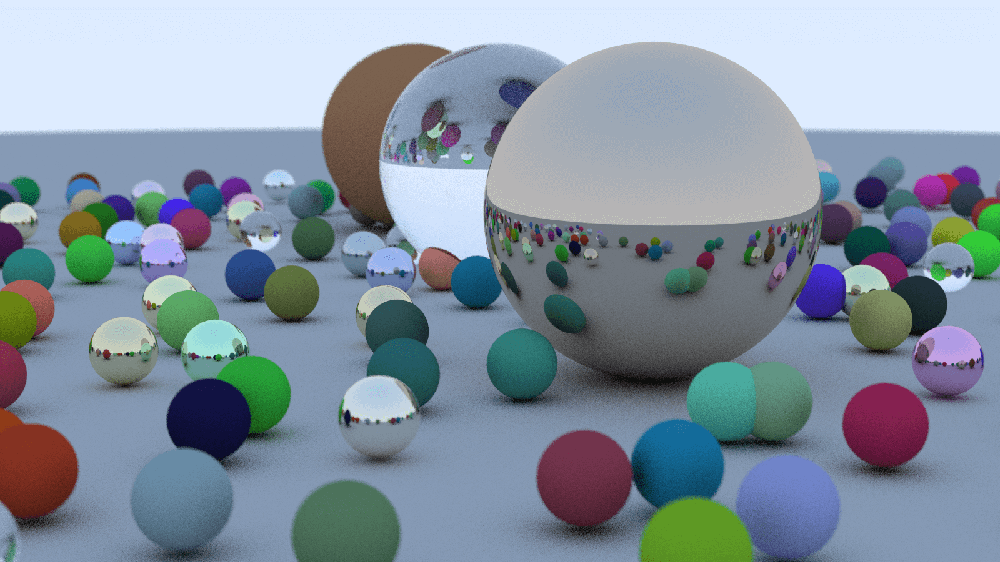
The bottom image is an output that used more advanced techniques, such as Monte Carlo path tracing, to create more realistic lighting.
The public GitHub repo for this project is available here.
For more information and more images, the poster for my final project, which I presented at the University of Portland, can be viewed here. The presentation slides are available here.
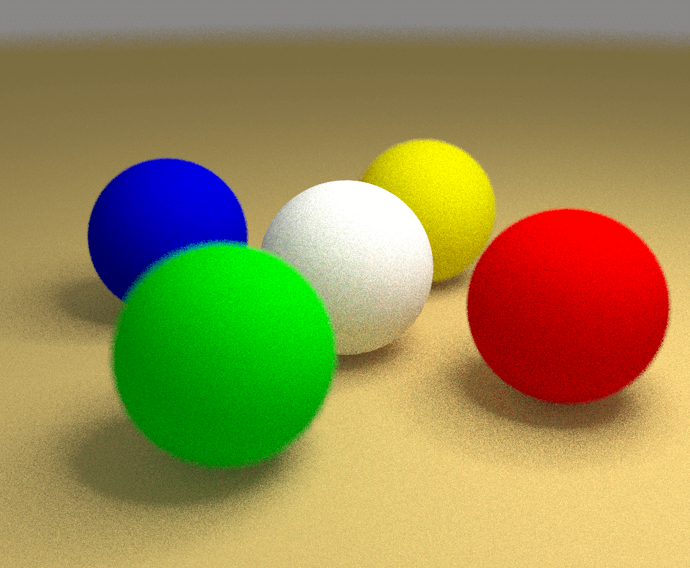
Explainable Neural Networks
During summer of 2019 I worked on a project at Oregon State University on explainable neural networks. This project aimed to explain the decision-making of deep neural nets for image recognition in terms of human concepts.
The program was trained to recognize and identify images of birds and then analyzed to see whether it focused on semantically meaningful concepts, such as "Eye" or "Crown" as in the image shown here.
The paper for this project is available here.
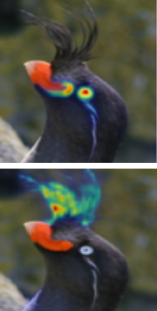
Dementia Diagnosis
Over the course of 2016 and early 2017 I helped develop a project that used deep convolutional neural nets to analyze MRI scans and attempt to diagnose various stages of dementia. My motivation for this project comes from my family's history of Alzheimer's.
By developing a technique that allowed the 3D MRI scans to each be split into hundreds of 2D "slices" as seen in the image, I was able to substantially improve the accuracy of the program.
The project was submitted to the 2017 Central Western Oregon Science Expo and the subsequent Intel Northwest Science Expo. The presentation poster can be viewed here.
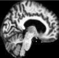
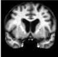
Websites
Aside from this website, I've developed other websites and concepts for websites. One example is airinchina.github.io, which I created as an informative supplement for a high school project on air pollution in China.
A test website I created as a structure for my final project for Web Development (CS290) at OSU can be viewed here. Try the search bar!
The most recent and the largest-scale website I've worked on so far is TigerTools, which I worked on alongside two of my classmates and friends, Indu Panigrahi and Adam Rebei. The website connects a simple and intuitive interface with a variety of APIs, allowing Princeton students to quickly locate on-campus amenities, such as printers, scanners, water filling stations, cafés, and vending machines.
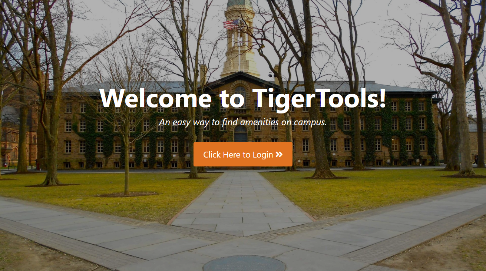
The code for this project is publicly available here.
The latest version of TigerTools is currently being hosted at TigerApps (requires a Princeton account to access).
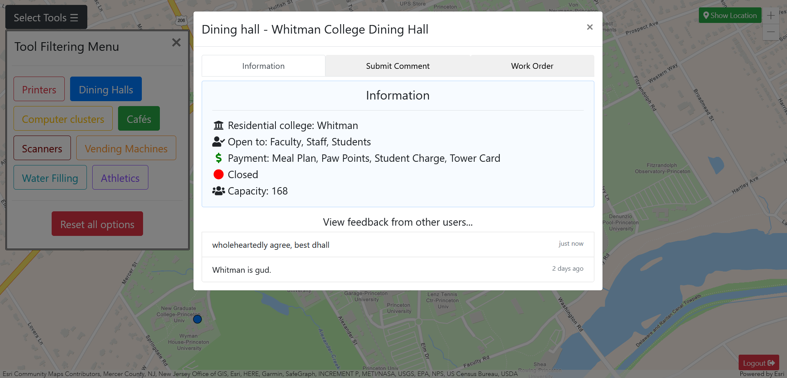
Another website I've developed is named QTPod, which provides a web interface for users to listen to podcasts with advertisements automatically blocked. The advertisements are detected with speech recognition and removed.
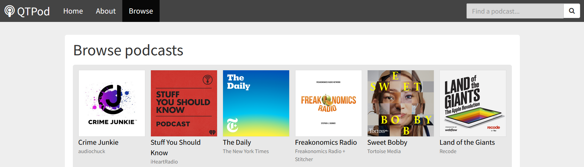
The website was developed using the Express framework for Node.js, and MongoDB for the database.
The code for this website is available here.
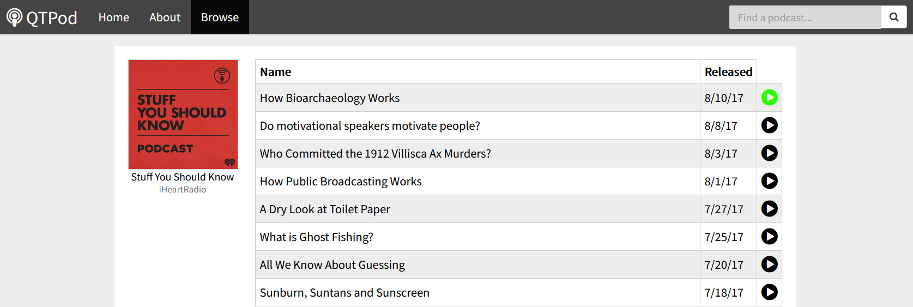